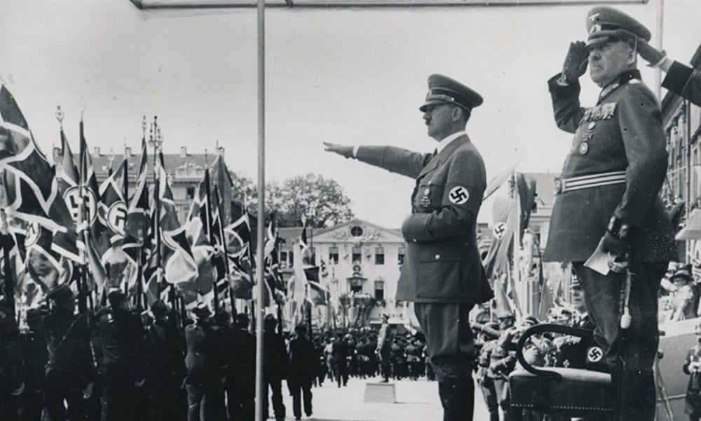
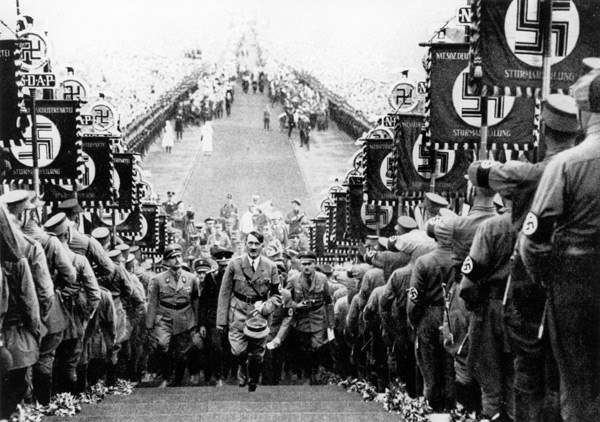
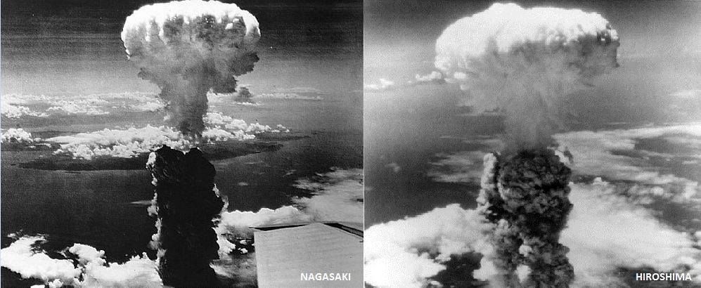
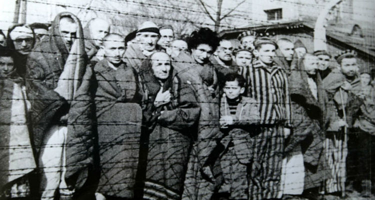

Eventos históricos que mudaram o mundo
Para voltar à página inicial, clique no botão abaixo.
Página inicialSegunda Guerra Mundial

A Segunda Guerra Mundial foi um conflito militar global que durou de 1939 a 1945, envolvendo a maioria das nações do mundo — incluindo todas as grandes potências — organizadas em duas alianças militares opostas: os Aliados e o Eixo. Foi a guerra mais abrangente da história, com mais de 100 milhões de militares mobilizados.
- Localização: Europa, Pacífico, Atlântico, Sudeste Asiático, China, Oriente Médio, Mediterrâneo, Norte da África e brevemente na América do Norte e do Sul;
- Data: 1 de setembro de 1939 – 2 de setembro de 1945;
- Desfecho: Vitória Aliada
Motivo das Guerras:
Entre as causas para o início da Segunda Guerra estão as duras condições impostas à Alemanha com o Tratado de Versalhes e a crise econômica vivida na Europa, com a destruição de países europeus. Estes foram, sem dúvida, elementos que geraram graves tensões nacionalistas e imperialistas no fim da Primeira Guerra e que fizeram eclodir a Segunda Guerra Mundial.
Acrescente-se a isso que os Estados Unidos e o Japão despontaram como novas potências econômicas, ao passo que as potências hegemônicas europeias – Inglaterra e França – não só estavam enfraquecidas pelos efeitos da guerra como também já enfrentavam movimentos de descolonização na África e na Ásia. No caso da Ásia, o conflito entre japoneses e norte-americanos acentuou-se em torno da expansão da área de influência de cada um no Pacífico e na China.
A Alemanha perdeu todas as suas colônias e ainda foi obrigada a arcar com uma pesada indenização aos países vencedores, ratificada no Tratado de Versalhes.
Na Itália, além da economia arruinada, a crise da monarquia parlamentar possibilitou a ascensão dos fascistas ao poder, em 1922.

Os Conflitos e o fim da Guerra
A Segunda Guerra Mundial estendeu-se de 1939 até 1945, resultando na morte de 60 milhões a 70 milhões de pessoas, embora existam estatísticas que sugiram que a guerra provocou mais que 70 milhões de mortos. O conflito teve como estopim a invasão da Polônia pelos alemães em 1º de setembro de 1939A guerra iniciou-se na Europa, mas espalhou-se pela África, Ásia e Oceania e contou com o envolvimento de nações de todos os continentes, inclusive o Brasil. Pode ser organizada em três fases distintas: a fase da supremacia alemã, a fase em que as forças estavam equilibradas e a fase que marcou a derrota do Eixo.
Os grupos que se enfrentaram na guerra foram os Aliados (Reino Unido, França, União Soviética e Estados Unidos) e o Eixo (Alemanha, Itália e Japão). Esse conflito ficou marcado por uma série de acontecimentos impactantes, tais como o Massacre de Katyn, o Holocausto, o Massacre de Babi Yar e o lançamento das bombas atômicas sobre Hiroshima e Nagasaki.
A Segunda Guerra teve fim oficialmente em 2 de setembro de 1945, quando os japoneses assinaram um documento que reconhecia sua rendição incondicional aos americanos (os nazistas renderam-se aos Aliados em maio de 1945).

O Holocausto:
O Holocausto é o termo utilizado em referência ao assassinato em massa de cerca de 11 milhões de pessoas pelo regime nazista durante a Segunda Guerra Mundial. Essas mortes foram consequência da perseguição do regime a grupos específicos, como comunistas, ciganos, homossexuais, deficientes físicos e mentais, e, majoritariamente, judeus. Do número total, estima-se que 1,5 milhões eram crianças e 6 milhões, judeus..
A chegada do Partido Nacional Socialista (Nazista) ao poder na Alemanha, em 1933, criou o chamado Terceiro Reich, ou Terceiro Império, e tinha Adolf Hitler como líder. A ideologia nazista defendia que os judeus eram os grandes culpados pela difícil situação econômica em que se encontrava o país desde a derrota na Primeira Guerra Mundial, e, em 1935, deu início a políticas de perseguição e segregação social desta população com as chamadas Leis de Nuremberg.
Os nazistas acreditavam que existia uma “raça” superior, a ariana, e desejavam alcançá-la em sua perfeição, sem que houvesse mistura entre arianos e outros grupos; e livre de imperfeições, o que fez com que homossexuais e pessoas com deficiências físicas e/ou mentais fossem alvo das políticas de perseguição, encarceramento e eliminação junto com judeus e ciganos, consideradas “raças” inferiores.
A política nazista de eliminação dessas populações chegou a seu extremo com a chamada “solução final”, que consistia no aprisionamento em campos de concentração e no uso de câmaras de gás, uma tecnologia desenvolvida para otimizar o assassinato em massa, visto que matava por asfixia com a liberação de gases em um determinado ambiente em que eram colocadas centenas de pessoas.
